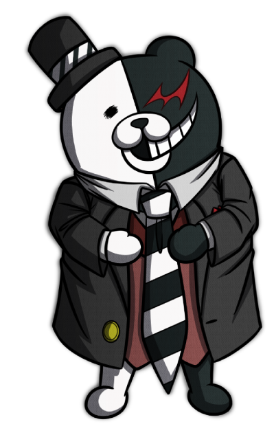

HISTÓRIA

Danganronpa é uma série de jogos ambientados em uma academia chamada Hope’s Peak Academy, onde estudantes são desafiados por um urso robótico malicioso, Monokuma, a participar de um jogo mortal. Onde todos os estudantes possuem talentos especiais em cada uma das diversas áreas da vida.
VILÃ PRINCIPAL
Junko Enoshima, uma personagem icônica conhecida por sua astúcia e perversidade. Ela é uma mestra da manipulação e do caos, sendo a mente por trás dos Jogos Mortais de Monokuma, que envolvem um grupo de estudantes presos em uma escola e forçados a matar uns aos outros para escapar.